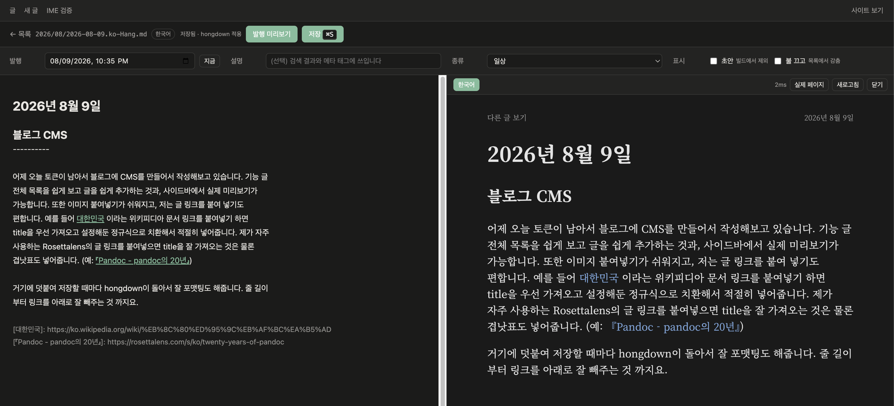

2026년 8월 9일
블로그 CMS
어제 오늘 토큰이 남아서 블로그에 CMS를 만들어서 작성해보고 있습니다. 기능 글 전체 목록을 쉽게 보고 글을 쉽게 추가하는 것과, 사이드바에서 실제 미리보기가 가능합니다. 또한 이미지 붙여넣기가 쉬워지고, 저는 글 링크를 붙여 넣기도 편합니다. 예를 들어 대한민국 이라는 위키피디아 문서 링크를 붙여넣기 하면 title을 우선 가져오고 설정해둔 정규식으로 치환해서 적절히 넣어줍니다. 제가 자주 사용하는 Rosettalens의 글 링크를 붙여넣으면 title을 잘 가져오는 것은 물론 겹낫표도 넣어줍니다. (예: 『Pandoc - pandoc의 20년』)
거기에 덧붙여 저장할 때마다 hongdown이 돌아서 잘 포맷팅도 해줍니다. 줄 길이 부터 링크를 아래로 잘 빼주는 것 까지요.
아래 스크린샷과 같은 느낌으로 작성하고 있습니다. 사진 넣기도 편해요.
